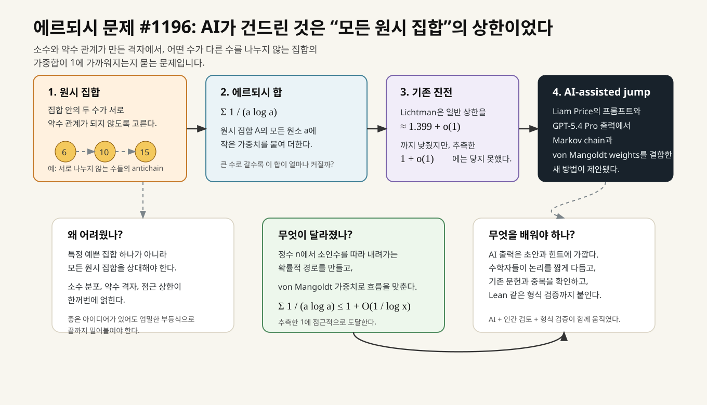
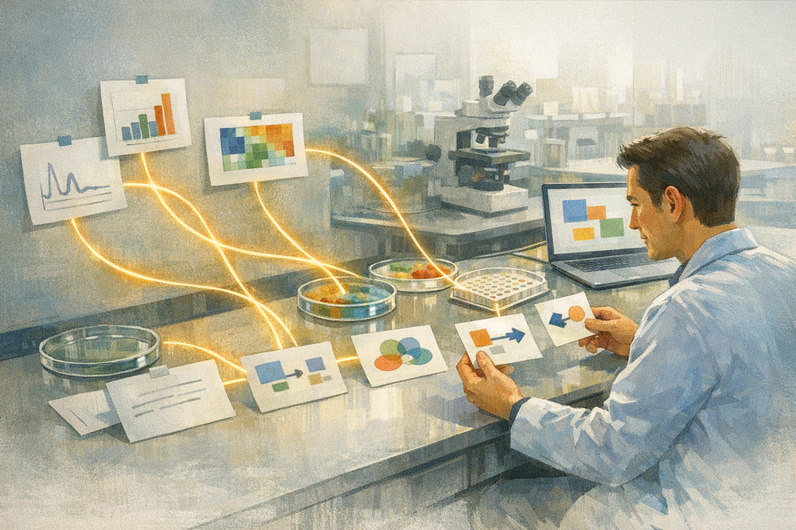
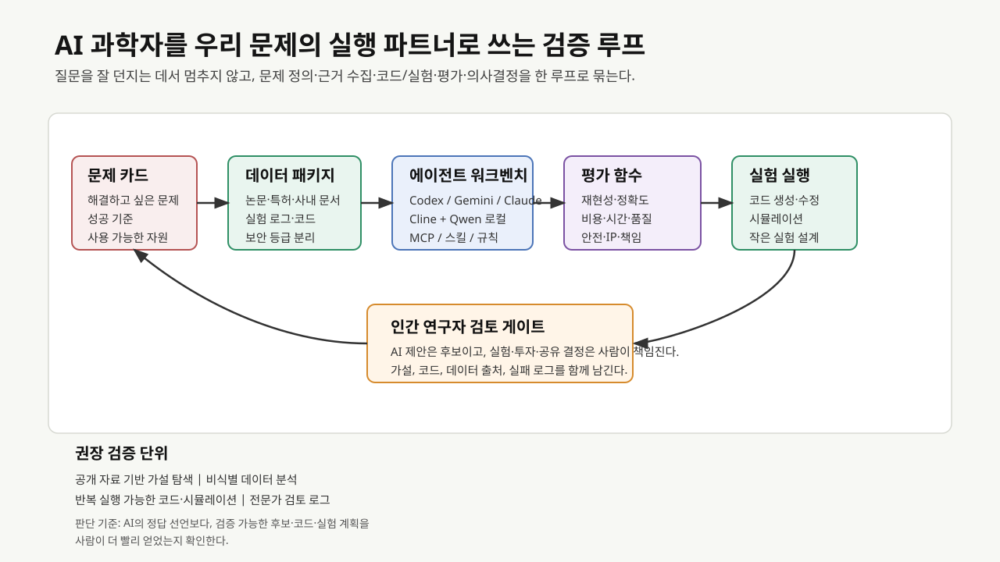
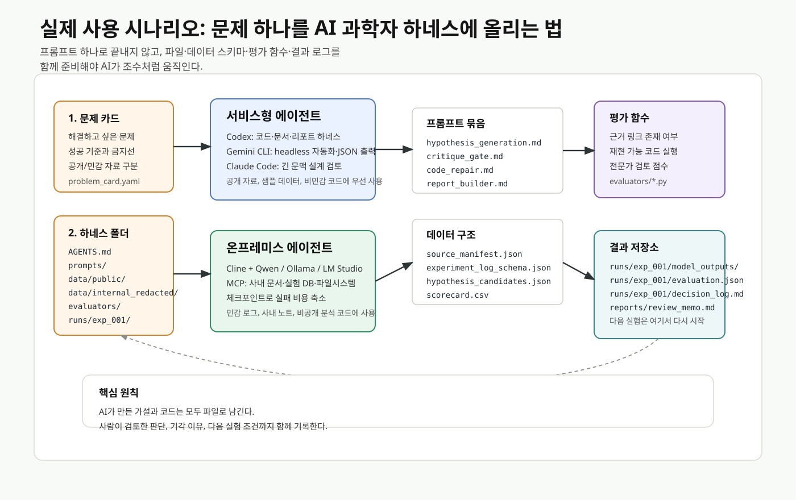
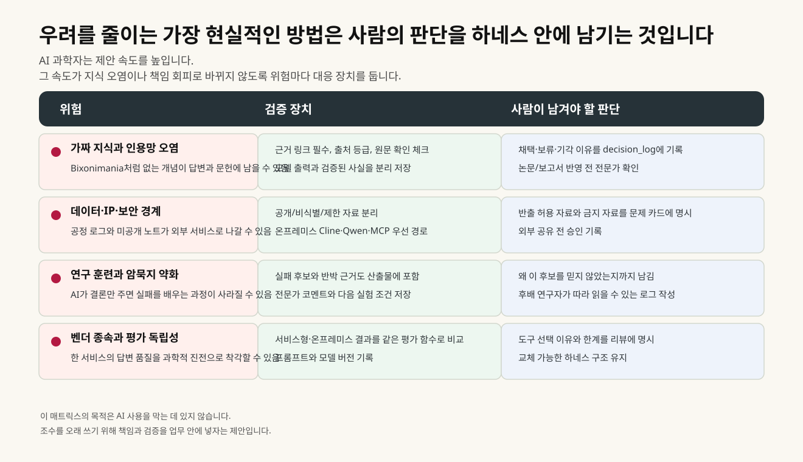

2026년 4월, 수학 뉴스 하나가 묘한 울림을 만들었습니다. GPT-5.4 Pro가 에르되시 문제 #1196을 풀었다는 소식이었습니다. 뉴스스페이스는 이 일을 국내 독자에게 전했고, Scientific American은 조금 더 영화 같은 장면을 붙였습니다. Liam Price라는 23세 사용자가 어느 월요일 오후, 문제의 역사도 자세히 모른 채 GPT-5.4 Pro에 #1196을 던졌습니다. 나온 답은 Kevin Barreto를 거쳐 수학자들에게 전달됐고, Terence Tao와 Jared Duker Lichtman이 그 안에서 낯선 길을 보았습니다.
수학계 바깥의 독자에게는 이름부터 낯설 수 있습니다. 에르되시 문제란 무엇이고, 왜 번호 하나로 불리는 문제가 사람들을 들뜨게 만들었을까요?
폴 에르되시(Paul Erdős)는 20세기 수학에서 가장 많은 문제를 남긴 사람 중 한 명입니다. 그의 힘은 정답보다 날카로운 물음에 있었습니다. 그가 남긴 문제들은 정수론, 조합론, 그래프 이론 곳곳에 남아 있습니다. 어떤 문제는 금방 풀렸고, 어떤 문제는 수십 년 동안 사람을 기다렸습니다. #1196은 그 기다림 쪽에 있었습니다.
문제의 무대는 원시 집합(primitive set)입니다.1 집합 안의 어떤 수가 다른 수의 약수가 되지 않도록 고른 정수 집합입니다. 작은 칠판을 하나 떠올려보면 쉽습니다. 6, 10, 15를 써 놓으면 어느 수로도 다른 수를 딱 나눌 수 없습니다. 이 셋만 놓고 보면 원시 집합의 작은 예입니다. 반대로 6과 12를 나란히 넣으면 6이 12를 나누기 때문에 조건이 깨집니다.
여기서 에르되시, 사르쾨지, 세메레디는 더 섬세한 물음을 던졌습니다. 원시 집합 A의 원소 a마다 1 / (a log a)라는 작은 가중치를 얹어 모두 더합니다. 수가 커질수록 가중치는 작아집니다. 문제 #1196은 충분히 큰 수들만 모은 어떤 원시 집합을 가져와도 이 합이 점점 1을 넘지 않는 쪽으로 간다고 말할 수 있는지 묻습니다. Erdős Problems 공식 페이지는 이 명제를 “PROVED (LEAN)”로 표시하고, GPT-5.4 Pro가 Liam Price의 프롬프트를 받아 1 + O(1 / log x) 상한을 증명했다고 적고 있습니다.

왜 이 문제가 오래 남았는지는 여기서 보입니다. 하나의 예쁜 집합을 골라 합을 계산하는 문제라면 사람은 그 집합을 해부하면 됩니다. #1196은 훨씬 넓습니다. 가능한 모든 원시 집합을 상대로 상한을 잡아야 합니다. 약수 관계가 만든 거대한 격자에서, 어떤 길로 수를 따라 내려가야 전체 합을 거머쥘 수 있을지 찾아야 합니다. Jared Duker Lichtman은 기존 연구에서 일반 상한을 약 1.399 + o(1)까지 낮췄지만, 에르되시가 바라본 1 + o(1)에는 닿지 못했습니다.
이번 이야기의 흥미는 AI 단독 완성 논문에 있지 않습니다. Scientific American에서 Lichtman은 GPT 출력 자체가 꽤 거칠었고, 전문가가 그 안에서 무엇을 말하려는지 걸러내야 했다고 말합니다. arXiv에 올라온 Alexeev, Barreto, Li, Lichtman, Price, Shah, Tang, Tao의 논문은 GPT-5.4 Pro 출력에서 Markov chain과 von Mangoldt weights를 결합하는 방법이 제안됐고, 그 방법이 #1196과 #1217, 그리고 관련 원시 집합 문제들로 확장됐다고 적습니다. AI가 낯선 길을 비췄고, 사람들은 그 길을 수학의 언어로 다시 포장했습니다. 문제 페이지에는 Lean 형식 검증도 더해졌습니다.
이 장면은 수학자에게만 흥미로운 이야기가 아닙니다. “AI가 어떤 방식으로 새 길을 낼 수 있는가”라는 물음이 여기 들어 있습니다. 사람이 문제를 고르고, AI가 낯선 조합을 던지고, 전문가가 그 조합의 의미를 알아보고, 논문과 형식 검증이 뒤따릅니다. Quanta Magazine은 2025년 여름 이후 수학자들이 AI를 계산 보조를 넘어 증명 전략을 같이 탐색하는 파트너로 다루기 시작했다고 전했습니다. 한국어로 이 흐름을 더 차분히 따라가고 싶다면, KIAS Horizon의 「수학, 인공지능, 그리고 형식화」가 읽기의 보조선이 됩니다. 카페에서 ChatGPT와 Codex를 쓰는 학생들의 장면에서 시작해, AI 수학 연구와 형식화 문제로 천천히 들어갑니다. 놀라움, 흥분, 조심스러움이 동시에 있습니다. 바로 그 복합적인 감정이 지금 과학계 전체로 번지고 있습니다.
수학에서 과학으로
수학 칠판에서 생긴 이 변화는 생명과학, 재료, 기후, 에너지 연구로 넘어오면 더 넓은 형태를 가집니다. 수학에서는 증명을 한 줄씩 대조할 수 있습니다. 실험과 산업 문제에서는 문헌, 데이터, 코드, 장비, 비용, 안전, 책임이 동시에 움직입니다. AI 과학자라는 말도 그래서 모델 이름 하나에 붙어 있지 않습니다. 오히려 연구자가 하루 동안 오가는 작업의 모양을 바꿉니다.
Nature의 Co-Scientist 논문은 Gemini 기반 멀티 에이전트 시스템을 다룹니다. 멀티 에이전트는 하나의 챗봇이 모든 일을 하는 방식이 아닙니다. 어떤 에이전트는 가설을 만들고, 어떤 에이전트는 비판하고, 어떤 에이전트는 순위를 매기고, 어떤 에이전트는 다시 개선합니다.2 논문 초록은 이 시스템이 약물 재창출, 신규 표적 탐색, 항생제 내성 기전 설명에 쓰였고, 급성 골수성 백혈병의 후보 조합 치료는 시험관 실험으로 확인됐다고 보고합니다.

FutureHouse의 Robin 논문은 실험실의 반복에 더 가까이 다가갑니다. Robin은 건성 연령관련 황반변성(dry age-related macular degeneration, dAMD) 치료 후보를 찾는 과정에서 문헌을 읽고, 후보를 제안하고, 실험 결과를 해석하고, 후속 RNA-seq 분석까지 다뤘습니다. 논문은 ripasudil과 KL001의 효과를 시험관에서 확인했고, ripasudil이 망막색소상피세포의 phagocytosis, 즉 세포가 불필요한 물질을 먹어 치우는 기능을 높이는 과정에서 ABCA1이 관련될 수 있다는 후속 가설을 냈다고 보고합니다.
ERA 논문은 연구 소프트웨어를 겨냥합니다. 아이디어가 있어도 분석 코드를 만들고, 품질 지표를 최적화하고, 결과를 비교하는 데 시간이 갑니다. ERA는 LLM과 tree search를 결합해 과학 소프트웨어를 반복적으로 생성했습니다. Nature 초록에는 단일세포 데이터 분석에서 공개 leaderboard 상위 인간 개발 방법보다 나은 신규 방법 40개, COVID-19 입원 예측에서 CDC ensemble보다 나은 모델 14개가 등장합니다.
Google DeepMind의 AlphaEvolve는 다른 언어로 같은 흐름을 말합니다. Gemini가 프로그램을 제안하고, 자동 평가자가 후보를 시험하고, 진화 알고리즘이 더 나은 후보를 다음 세대로 넘깁니다. Google DeepMind는 이 방법이 데이터센터, 칩 설계, AI 학습, 행렬곱 알고리즘, 수학 문제에 영향을 주었다고 밝혔습니다.
Nature의 The AI Scientist 논문은 더 멀리 갑니다. 이 시스템은 기계학습 연구를 대상으로 아이디어 생성, 문헌 검색, 실험 코드 작성, 결과 분석, 논문 작성, 자체 리뷰까지 한 흐름으로 묶었습니다. 논문은 한 AI 생성 논문이 ICLR 2025 워크숍 peer review에서 수락권 점수를 받았다고 보고합니다. 동시에 한계도 분명히 적습니다. 세 편 중 한 편만 워크숍 기준에 닿았고, 최상위 본회의 논문 수준에는 이르지 못했으며, 부정확한 구현과 citation hallucination 같은 실패 양상도 남았습니다.
Co-Scientist, Robin, ERA, AlphaEvolve, The AI Scientist는 서로 다른 분야를 향합니다. 그래도 모양은 닮았습니다. AI가 “정답”을 한 번 말하고 끝나는 일이 아닙니다. 가설, 비판, 코드, 평가, 실험, 다시 가설. 연구의 작은 단위들이 조금 더 빠르게 돌기 시작합니다. 과학자가 하루에 읽을 수 있는 문헌, 확인할 수 있는 후보, 고칠 수 있는 코드, 비교할 수 있는 변형이 늘어납니다. 그 속도가 새로운 기대를 낳습니다.
국가와 기업의 속도
이 변화는 연구실 안의 흥미로운 실험으로만 남지 않습니다. 구글 딥마인드와 과학기술정보통신부의 2026년 4월 27일 발표에는 K-문샷 미션, AI Campus, 생명과학·에너지·기상·기후 분야 협력, AlphaEvolve, AlphaGenome, AlphaFold, AI co-scientist, WeatherNext가 한꺼번에 등장합니다. AI co-scientist는 과학기술정보통신부의 AI 과학자 프로젝트에 통합될 수 있도록 공동 연구와 기술 자문을 추진한다는 문장도 있습니다.
이 발표의 풍경은 선명합니다. AI for Science는 더 이상 “언젠가 좋아질 도구”로만 취급되지 않습니다. 국가 연구 인프라, 대학과 연구기관, 대형 기술기업, AI 안전, 인재 육성의 언어가 같은 문단에 놓입니다. 수학에서 보였던 변화가 생명과학, 에너지, 기후, 제조 문제로 이동하고 있습니다.
회사 입장에서 이 흐름은 조금 다르게 다가옵니다. 우리에게는 논문 속 benchmark보다 더 지저분한 문제가 많습니다. 실패한 실험 기록, 품질 이슈의 맥락, 장비와 recipe 변경 이력, 고객 불만의 실제 원인, 숙련자의 경험, 승인과 책임의 경계가 뒤엉켜 있습니다. 바로 그 지저분함 때문에 AI 과학자가 쓸모 있어질 여지가 생깁니다.
예를 들어 “AI로 소재 개발을 가속화하자”는 말은 너무 넓습니다. 반면 “특정 host-dopant 조합에서 lifetime을 떨어뜨리는 조건을 찾고, 다음 실험 후보 20개를 5개로 줄이자”는 문장은 바로 작업으로 바뀝니다. 문헌을 찾을 수 있고, 익명화된 실험표를 연결할 수 있고, 후보 가설을 JSON으로 남길 수 있고, 다음 실험 조건을 사람이 고를 수 있습니다. AI 과학자는 이런 크기의 문제에서 현실로 내려옵니다.
기대가 커질수록 생기는 물음
여기까지 오면 독자 마음속에 자연스러운 물음이 생깁니다. 수학자는 AI가 만든 증명 경로를 받아 적고, 생명과학자는 AI가 낸 가설을 실험대에 올리고, 정부와 기업은 AI 과학자를 국가 전략과 산업 인프라 안으로 부릅니다. 그런데 이렇게 빨라져도 괜찮을까요? 누가 틀린 지식을 막고, 누가 정교한 물음을 배우며, 누가 실패한 결정의 책임을 질까요?
그 물음이 생길 때쯤 Bixonimania 이야기가 들어옵니다. 스웨덴 연구진은 일부러 가짜 질병 이름을 만들었습니다. 그리고 그 이름은 AI 챗봇의 답변에 등장했고, 이후 학술 인용망 안으로도 흘러 들어갔습니다. Nature News Feature는 이 가짜 질병이 허술한 조작 논문과 글에서 출발했는데도 AI가 실제 의학 지식처럼 다루었다고 보도했습니다. 한겨레는 이 사건을 국내 독자에게 전하며, 그럴듯한 말투와 출처 모양이 어떻게 사람의 경계를 낮추는지 전했습니다.
Quanta의 수학 기사에도 비슷한 불안이 남아 있습니다. AI가 만든 수학적 쓰레기가 공용 지식의 장을 오염시킨다는 걱정, 학생들이 손으로 훈련하던 수학 근육을 잃을 수 있다는 걱정, 형식 검증이 없으면 진지한 응용에서 AI를 믿기 어렵다는 말이 같이 나옵니다. Nature의 사설과 Comment도 비슷한 온도를 가집니다. 과학은 빨라지고 있지만, 빠른 문장이 곧 믿을 만한 지식은 아닙니다.
그렇다고 멈추자는 이야기는 설득력이 약합니다. 이미 도구는 연구실과 사무실 안으로 들어왔고, 사람들은 쓰고 싶어 합니다. 논점은 사용 금지보다 사용 방식 쪽에 놓입니다. 무엇을 AI에게 맡기고, 무엇을 사람이 쥐고, 어떤 결과를 다음 실험이나 코드 검토로 넘길 것인가. 이 물음을 다루기 위해 작업대가 생깁니다. 영어권에서는 harness라는 말도 씁니다.3
회사 문제를 작업대에 올리기
AI 과학자형 업무는 물음에서 답으로 곧장 달려가지 않습니다. 먼저 문제를 작게 접습니다. 그다음 AI가 읽을 수 있는 자료와 사람이 대조할 기준을 놓습니다. 그리고 에이전트가 만든 후보를 다시 실험, 코드, 검토 기록으로 내려놓습니다.

작업대의 기본 구성은 단순합니다.
| 구성 요소 | 담아야 할 내용 | 읽는 법 |
|---|---|---|
| 문제 카드 | 풀고 싶은 문제, 제외할 범위, 성공 기준, 책임자, 금지할 행동 | AI에게 맡길 수 있는 크기의 과제로 줄입니다. |
| 자료와 데이터 | 공개 논문, 특허, 사내 실험표, 로그, 코드, 이전 의사결정 | 공개 자료와 민감 자료를 다른 경로에 둡니다. |
| 에이전트 워크벤치 | Codex, Gemini CLI, Claude Code, Cline, Qwen Code, MCP 도구 | 도구는 문제와 보안 경계에 맞춰 고릅니다. |
| 평가 함수 | 재현 가능한 metric, 테스트 케이스, 근거 링크, 전문가 점수표 | 결과의 설득력보다 다음 행동 가능성을 봅니다. |
| 검토 로그 | 채택, 보류, 기각 이유와 검토자 의견 | 다음 사람이 같은 지점에서 다시 시작할 수 있게 합니다. |
여기서 AI에게 “아이디어를 몇 개 내줘”라고 말하면 회의 안건이 늘어납니다. 조금 더 작게 바꾸면 일이 움직입니다. “이 문제 카드의 성공 기준을 기준으로 후보 가설 20개를 만들고, 각 가설의 근거 문헌과 반증 가능성을 단 뒤, 평가 함수가 읽을 수 있는 JSON으로 저장해줘.” 이 문장은 다음 실험, 다음 코드 검토, 다음 리뷰 회의로 연결됩니다.
지금 쓸 수 있는 세 가지 장면
첫 번째 장면은 공개 자료 기반 가설 탐색입니다. 논문, 특허, 제품 문서, 공개 benchmark처럼 외부 서비스에 올려도 되는 자료가 중심일 때는 Codex, Gemini CLI, Claude Code 같은 서비스형 에이전트가 빠릅니다. OpenAI Codex는 로컬과 클라우드 작업면에서 코드를 읽고 수정하며 테스트와 리뷰를 돕는 개발 에이전트입니다. Codex agent loop에는 사용자 입력, 모델 추론, 도구 호출, 관찰, 다음 계획이 반복되는 흐름이 담겨 있습니다. Gemini CLI와 Claude Code CLI는 터미널과 자동화 작업에 연결하기 좋습니다.
예를 들어 OLED 수명 저하 원인을 좁히는 문제라면 공개 논문과 익명화 통계만 올려 원인 후보를 뽑게 할 수 있습니다. 재료 조합, 공정 조건, 측정 조건별로 후보 가설을 만들고, 근거 문헌과 반례 후보를 같이 남기는 식입니다. 민감한 lot, 고객사, 장비 원본 로그는 이 경로에 섞지 않습니다.
두 번째 장면은 온프레미스 민감 자료 분석입니다. 사내 로그, 실험 원본, 고객 이슈, 설비 조건처럼 외부 반출이 어려운 자료는 로컬 또는 사내망 기반으로 다룹니다. Cline 문서는 Ollama나 LM Studio를 통한 로컬 모델 사용을 안내합니다. Qwen3-Coder는 Qwen Code라는 agentic coding용 command-line 도구를 같이 내놓았습니다. Cline과 Qwen 계열 모델을 사내 문서 검색, 실험 DB 조회, 파일 시스템 도구와 연결하면 외부 서비스로 자료를 보내지 않고도 반복 분석을 시작할 수 있습니다.
세 번째 장면은 반복 평가와 보고 자동화입니다. 이미 평가 기준이 정해진 문제라면 에이전트가 매번 같은 형식으로 후보를 만들고, 테스트를 돌리고, 결과표를 쌓게 할 수 있습니다. Gemini CLI headless mode는 gemini --prompt 또는 gemini -p로 prompt를 넘기고 JSON 출력과 piping을 사용할 수 있다고 안내합니다. Claude Code의 print mode도 자동화 흐름에 맞습니다. Codex나 Qwen Code는 저장소 안에서 평가 script와 문서 생성을 함께 다루는 쪽에 잘 어울립니다.
다음 명령은 실제 프로젝트에 맞춰 바꿔 쓰는 개념 예시입니다. 도구 버전과 인증 방식은 설치 환경에 따라 달라질 수 있습니다.
# 공개 자료 기반 가설 생성 결과를 JSON으로 저장하는 예시
gemini -p "@prompts/hypothesis_generation.md `
problem_card=problem_card.yaml `
manifest=source_manifest.json" `
--output-format json > runs/2026-05-23/hypothesis_candidates.raw.json
# Claude Code print mode로 검토 코멘트를 구조화해 받는 예시
claude -p --output-format json `
"Read runs/2026-05-23/hypothesis_candidates.json and flag weak evidence, missing counterexamples, and unsafe claims."
작은 작업 폴더
실전에서는 거대한 플랫폼을 기다릴 필요가 없습니다. 한 문제를 아래처럼 작은 폴더에 올려두는 것만으로도 AI 과학자형 작업이 시작됩니다.

ai_scientist_workspace/
AGENTS.md
problem_card.yaml
source_manifest.json
.cline/
mcp.json
prompts/
hypothesis_generation.md
evidence_review.md
data/
public_papers/
anonymized_experiments.parquet
schema.md
tools/
score_hypotheses.py
search_literature.py
query_experiment_db.py
runs/
2026-05-23/
hypothesis_candidates.json
evaluation.json
decision_log.md
problem_card.yaml에는 문제를 작게 씁니다.
problem_id: oled_lifetime_drop_q2
question: "최근 3개월 OLED lifetime drop 후보 원인을 공개 문헌과 익명화 실험 통계로 좁힌다."
target_decision: "다음 실험 queue에 올릴 원인 가설 5개를 고른다."
allowed_sources:
- public_papers
- patents
- anonymized_experiment_summary
blocked_sources:
- raw_customer_logs
- supplier_contracts
- personally_identifiable_data
success_metrics:
min_evidence_links_per_hypothesis: 2
requires_counterexample: true
requires_owner_review: true
human_reviewers:
- materials_scientist
- process_engineer
- data_governance_owner
온프레미스 경로에서는 .cline/mcp.json 같은 설정으로 AI가 접근할 수 있는 도구를 좁힙니다.
{
"mcpServers": {
"literature-search": {
"command": "python",
"args": ["tools/search_literature.py"],
"env": {
"SOURCE_ROOT": "data/public_papers"
}
},
"experiment-summary": {
"command": "python",
"args": ["tools/query_experiment_db.py"],
"env": {
"MODE": "anonymized_summary_only"
}
}
}
}
prompts/hypothesis_generation.md는 역할극보다 산출물 형식에 힘을 줍니다.
You are assisting a scientific review team.
Use only sources listed in source_manifest.json.
Do not infer from blocked sources.
Return 10 candidate hypotheses as JSON.
Each item must include:
- hypothesis
- mechanism
- supporting_sources
- possible_counterexample
- needed_next_test
- confidence_rationale
- data_sensitivity
Prefer hypotheses that can change the next experiment queue.
결과는 문단보다 파일로 남을 때 다음 사람이 쓰기 쉽습니다.
[
{
"hypothesis_id": "H-003",
"hypothesis": "특정 host-dopant 조합에서 높은 driving voltage가 lifetime drop을 앞당긴다.",
"mechanism": "전하 균형 붕괴와 국소 발열 가능성",
"supporting_sources": [
"papers/oled_lifetime_charge_balance_2024.md",
"anonymized_experiments.parquet#group:HV-LT95"
],
"possible_counterexample": "동일 voltage에서도 encapsulation 조건이 다른 run은 drop이 작다.",
"needed_next_test": "voltage-matched split으로 host-dopant pair와 encapsulation condition을 분리 비교",
"confidence_rationale": "공개 문헌 2건과 익명화 통계에서 방향은 같지만, 공정 조건 confounder가 남아 있음",
"data_sensitivity": "internal_summary_only"
}
]
평가 함수는 처음부터 거창할 필요가 없습니다. 근거 수, 반례 여부, 다음 실험 가능성, 민감 자료 포함 여부만 봐도 후보의 질이 달라집니다.
import json
from pathlib import Path
def score(item: dict) -> dict:
evidence = len(item.get("supporting_sources", []))
has_counterexample = bool(item.get("possible_counterexample"))
has_next_test = bool(item.get("needed_next_test"))
sensitivity_ok = item.get("data_sensitivity") != "raw_sensitive"
score_value = 0
score_value += min(evidence, 3) * 2
score_value += 2 if has_counterexample else -2
score_value += 2 if has_next_test else -1
score_value += 1 if sensitivity_ok else -5
return {
"hypothesis_id": item.get("hypothesis_id"),
"score": score_value,
"review_flags": {
"needs_more_evidence": evidence < 2,
"missing_counterexample": not has_counterexample,
"blocked_by_sensitive_data": not sensitivity_ok,
},
}
items = json.loads(Path("runs/2026-05-23/hypothesis_candidates.json").read_text(encoding="utf-8"))
Path("runs/2026-05-23/evaluation.json").write_text(
json.dumps([score(item) for item in items], ensure_ascii=False, indent=2),
encoding="utf-8",
)
우려를 작업 안에 넣는 방법
위험을 말로만 남기면 금방 피로해집니다. 그래서 위험도 작업 산출물 안에 들어가야 합니다. Bixonimania 같은 지식 오염은 출처 등급과 원문 확인 항목으로 들어갑니다. 데이터 반출 위험은 allowed_sources와 blocked_sources로 들어갑니다. 훈련 약화는 실패 후보와 반례 기록으로 들어갑니다. 벤더 종속은 모델 버전과 실행 경로 기록으로 들어갑니다.

이 방식은 AI를 작게 묶는 절차처럼 보일 수 있습니다. 실제로는 더 크게 쓰기 위한 준비입니다. 공개 문헌을 넓게 훑고, 사내 데이터를 조심스럽게 연결하고, 후보 가설을 많이 만들고, 자동 평가를 돌리고, 전문가가 다음 실험을 고르는 일까지 잇기 위해 작업의 흔적을 남깁니다. 흔적이 남으면 팀은 AI의 쓸 만한 제안을 다시 쓰고, 틀린 제안도 다음 규칙으로 바꿀 수 있습니다.
조수라는 말의 무게
동료라는 말은 아직 조금 크고, 그래서 매력적입니다. 그 말에는 능력만 들어 있지 않습니다. 책임, 신뢰, 서로 배우는 시간, 공동의 목적이 같이 들어 있습니다. 지금의 AI 과학자는 그 모든 것을 갖춘 동료라기보다, 엄청난 속도로 후보를 넓혀주는 조수에 더 닮아 있습니다. 그래도 유능한 조수는 연구자의 하루를 바꿉니다.
수학자는 AI가 비춘 길을 따라가며 새로운 증명 전략을 얻었습니다. 생명과학자는 AI가 만든 후보를 실험대에 올렸습니다. 정부와 기업은 AI 과학자를 국가 연구 인프라와 산업 문제 안으로 부르고 있습니다. 회사의 연구자와 엔지니어도 같은 물음 앞에 섭니다. 우리에게 지금 풀고 싶은 문제가 있다면, 그것을 AI가 만질 수 있는 크기의 과제로 바꾸고, 결과가 다시 사람의 일로 돌아오게 만들 수 있을까요?
그 첫 답은 거대한 플랫폼보다 작고 선명한 작업 폴더일 수 있습니다. 문제 카드 하나, 자료 목록 하나, 후보 JSON 하나, 작은 평가 코드 하나. 그 위에 Codex, Gemini CLI, Claude Code, Cline, Qwen을 얹습니다. 어느 도구가 가장 똑똑한지 겨루는 자리가 아닙니다. 우리가 가진 문제를 더 넓게 보고, 더 빨리 시험하고, 더 나은 다음 문제로 옮기는 자리입니다.
AI 과학자의 시대가 온다면, 사람의 일은 사라지기보다 조금 달라질 가능성이 큽니다. 혼자 모든 문헌을 뒤지고 모든 후보를 손으로 쓰는 시간이 줄어듭니다. 대신 어떤 물음을 남길지, 어떤 후보를 실험대로 보낼지, 어떤 근거를 조직의 지식으로 받아들일지 고르는 시간이 더 중요해집니다. 그 변화가 낯설고도 매력적입니다. AI 과학자는 이미 문 앞에 와 있습니다. 문을 무작정 열어젖히기보다, 같이 일할 책상과 노트를 준비할 때입니다.
작성 정보
- 작성자: 김현중, AI Governance 팀
- 작성 보조 및 퇴고: Codex 기반 GPT-5 계열 에이전트 하네스
- 최초 작성일: 2026-05-23
- 도입부·문체·시각자료 재작성: 2026-05-23
- KIAS Horizon, Quanta Magazine, Scientific American, Nature
The AI Scientist보강 반영: 2026-05-23 - 최종 수정: 2026-05-23
- 작성 형식:
AI Tech Review Letters - 발행 라벨: AI Tech Review Letters: Week 21 (2026-05-23)
- 주제 탐색 참고자료: 2026-05-22 16:52 KST에 확인한 Gmail 제목
ai for sci메일의 Sergei Kalinin LinkedIn 공유 링크, 사용자가 제공한 Google Korea 파트너십 발표, AlphaEvolve, Google Research AI co-scientist, 뉴스스페이스, Quanta Magazine, 한겨레 기사 링크를 출발점으로 삼았습니다. 메일과 LinkedIn 공유 글은 주제 탐색 신호로만 두었고, 본문 결론은 논문, 공식 발표, 공식 문서, 공개 보도 원문을 다시 확인해 정리했습니다. - 주요 검증 참고자료: Erdős Problems #1196 공식 페이지와 discussion thread, arXiv
Primitive sets and von Mangoldt chains, Scientific American, Quanta Magazine, KIAS Horizon, Nature Co-Scientist·Robin·ERA·The AI Scientist 논문, Nature Bixonimania News Feature, Nature 사설과 Comment, Google Korea·Google Research·Google DeepMind 공식 발표, OpenAI Codex 공식 자료, Gemini CLI·Claude Code·Cline·Qwen 공식 문서. - 작성 및 검토 방식: 도입부, 섹션 제목, 캡션, 결론 문단에서 AI식 관용 표현, 번역체, 과한 대비 구조, 독자 해석을 앞서 정해버리는 문장, 모호한 주어를 점검했습니다. 문체 기준은 writing-style-audit-harness, writing-harness, horizon-style-patterns, editorial-reference-pool,
ai-tech-review-editorial-harness를 참고했습니다. - 시각 자료 작성 방식: 본문 figure는 FIGURE_MANIFEST.md와 IMAGEGEN_MANIFEST.md에 기록했습니다. Imagegen은 에르되시 도입부, AI Co-Scientist 연구실 장면, Bixonimania/지식 오염 섹션 opener에 사용했습니다. 정확한 한국어 라벨과 흐름이 필요한 원시 집합 설명, 실행 루프, 작업 폴더, 위험 매트릭스는 SVG로 작성했습니다.
- 이전 리뷰 참고: AI Updates Weekly final review의 작성 정보와 계층형 References, TabPFN OLED Manufacturing Foundation Model final review의 촘촘한 provenance와 figure 기록 방식을 참고했습니다.
- HTML 작성 방식: markdown_to_html.py의
final-review모드로 HTML companion을 생성했습니다. 배포용dist패키지는 아직 만들지 않았습니다.
References
직접 검증 참고자료
- Erdős Problems #1196 - primitive set에 대한 에르되시 문제 #1196,
PROVED (LEAN)표시, GPT-5.4 Pro와 Liam Price 프롬프트 관련 설명 확인. - Erdős Problems #1196 Discussion Thread - 문제 풀이 경로와 후속 논의 확인.
- Primitive sets and von Mangoldt chains: Erdős Problem #1196 and beyond - Markov chain, von Mangoldt weights, #1196/#1217 확장 설명 확인.
- Scientific American: An amateur just solved a 60-year-old math problem-by asking AI - Liam Price, Kevin Barreto, Terence Tao, Jared Duker Lichtman으로 이어지는 발견 경로와 GPT 출력의 거친 성격 확인.
- Quanta Magazine: The AI Revolution in Math Has Arrived - 수학계의 AI 활용 분위기, 기대와 우려, 형식 검증 논의 참고.
- KIAS Horizon: 수학, 인공지능, 그리고 형식화 1 - 수학을 위한 인공지능 - 한국어 과학 설명, AI 수학 연구, 형식화의 독자 친화적 전개 참고.
- 뉴스스페이스: AI, 인간 수학자의 ‘성역’ 넘봤나… GPT-5.4의 ‘에르되시 난제’ 해결 주장의 실체 - 국내 독자용 에르되시 #1196 소식 도입 참고.
- Nature: Accelerating scientific discovery with Co-Scientist - Gemini 기반 multi-agent AI Co-Scientist, 가설 생성·비판·개선 구조, biomedical validation 확인.
- Nature: A multi-agent system for automating scientific discovery - Robin, dAMD 후보 발굴, ripasudil/KL001 실험 확인.
- Nature: An AI system to help scientists write expert-level empirical software - ERA, LLM과 tree search 기반 과학 소프트웨어 생성, leaderboard 성능 확인.
- Nature: Towards end-to-end automation of AI research - The AI Scientist, 아이디어 생성부터 논문 작성과 자체 리뷰까지의 자동화 흐름, 워크숍 peer review 통과 사례와 한계 확인.
- Nature News Feature: Scientists invented a fake disease. AI told people it was real - Bixonimania 사례, 지식 오염과 citation trail 위험 확인.
- 한겨레: 가짜 질병 던졌더니 덥석 문 AI, 퍼나르고 학술지 인용까지 - Bixonimania 사례의 국내 보도와 독자 친화적 맥락 확인.
- Nature Editorial: Why AI cannot do good science without humans - AI 과학 활용에서 인간 연구자, 투명성, 재현성 요구 확인.
- Nature Comment: The uncritical adoption of AI in science is alarming - we urgently need guard rails - 과학계 AI 도입의 비판적 수용과 guardrail 논의 확인.
- Google Korea: 구글 딥마인드와 과학기술정보통신부, 국가 AI 파트너십 발표 - K-문샷, AI Campus, AI co-scientist 통합 가능성, 생명과학·에너지·기상·기후 협력 방향 확인.
- Google Research: Accelerating scientific breakthroughs with an AI co-scientist - Nature 논문 이전의 Google Research AI co-scientist 공개 설명 확인.
- Google DeepMind: AlphaEvolve - Gemini 기반 coding agent, 자동 평가와 진화 알고리즘, 데이터센터·칩 설계·수학 적용 주장 확인.
- OpenAI: Codex - Codex의 코드 읽기, 수정, 테스트, 리뷰 보조 경로 확인.
- OpenAI: Unrolling the Codex agent loop - 사용자 입력, 모델 추론, 도구 호출, 관찰, 계획 반복 구조 확인.
- Google Developers: Gemini CLI - Gemini CLI 사용 경로 확인.
- Gemini CLI Docs: Headless Mode -
gemini -p, JSON 출력, piping 기반 자동화 예시 확인. - Anthropic: Claude Code CLI reference - Claude Code CLI와 print mode 자동화 경로 확인.
- Cline Docs: Local models - Ollama, LM Studio 기반 로컬 모델 사용 경로 확인.
- Cline Docs: Configuring MCP Servers - Cline MCP 서버 설정 방식 확인.
- Qwen: Qwen3-Coder - Qwen3-Coder와 Qwen Code command-line tool 확인.
처음 참고한 자료
- Gmail 제목
ai for sci메일 - 2026-05-22 16:52 KST 확인. 본문은 Sergei Kalinin의The end of the beginning for AI for ScienceLinkedIn 공유 링크로 구성되어 있었고, 이 리뷰에서는 Nature 2026 AI for Science 논문 묶음과 “실험 세계로 연결되는 AI 과학자” 문제의식으로 확장했습니다. - 사용자 제공 링크 묶음 - Google Korea 국가 AI 파트너십 발표, AlphaEvolve, Google Research AI co-scientist, 뉴스스페이스, Quanta Magazine, 한겨레 Bixonimania 기사.
- source intake bridge - 초기 문제의식, seed source, 작성 방향 연결 메모.
- review flow note - 섹션 구성과 활용 시나리오 설계 메모.
- reader audit v2 - 도입부, 문체, 그림 배치, 대중강연식 리듬 점검 메모.
문체와 시각자료 참고
- KIAS Horizon - 한국어 과학 설명에서 장면, 질문, 개념을 천천히 좁혀가는 리듬 참고.
- Quanta Magazine - 과학 기사형 hero illustration, figure, caption 배치 참고.
- AI Updates Weekly final review -
작성 정보,직접 검증 참고자료,처음 참고한 자료,문체와 시각자료 참고형식 참고. - TabPFN OLED Manufacturing Foundation Model final review - 업데이트 provenance, 검증 메모 연결, figure manifest 기록 방식 참고.
- writing-style-audit-harness, writing-harness, horizon-style-patterns, editorial-reference-pool - AI식 표현, 번역체, 과한 대비 구조, 독자 경험 중심 도입부 점검 기준.
- editorial-graphics-audit-harness, visuals-and-image-generation - article-grade figure 배치, imagegen/SVG 역할 분리, caption 기준.
- FIGURE_MANIFEST.md - 본문 7개 figure의 목적, 도구, 채택 이유, 검토 기록.
- IMAGEGEN_MANIFEST.md - imagegen으로 만든 3개 장면형 illustration의 prompt 요약과 채택 기록.
-
원시 집합은 집합 안의 서로 다른 두 원소 a, b에 대해 a가 b를 나누지 않고 b도 a를 나누지 않는 정수 집합입니다. 정수론에서는 약수 관계가 만든 부분순서(poset)에서 서로 비교되지 않는 원소들의 모임, 즉 antichain처럼 볼 수 있습니다. ↩
-
AI Co-Scientist는 Google Research가 2025년 공개하고 Nature 2026 논문으로 확장한 Gemini 기반 과학 가설 생성 시스템입니다. 여기서 “코사이언티스트”는 완전 자율 연구자 한 명보다, 생성·비판·순위화·개선 역할을 나눈 에이전트 묶음으로 이해하면 정확합니다. ↩
-
이 글에서 하네스는 AI 모델을 억지로 묶는 장치라기보다, 문제 카드, 자료, 도구, 평가 기준, 결과 로그를 한 곳에 모아 반복 작업을 가능하게 하는 실행 환경을 뜻합니다. ↩